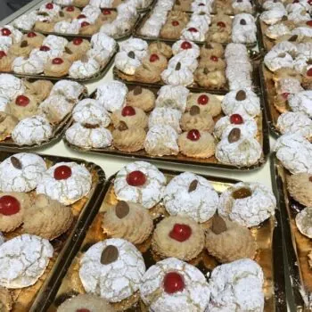
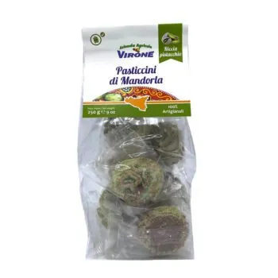
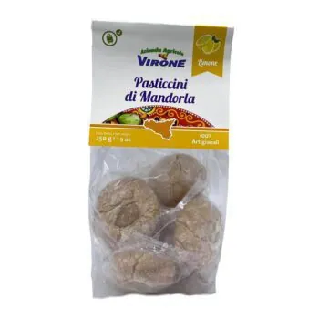
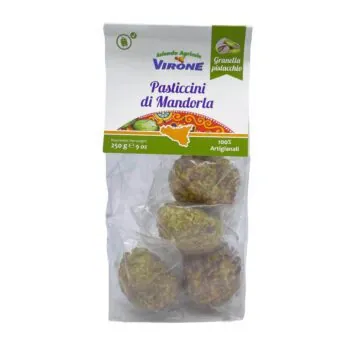
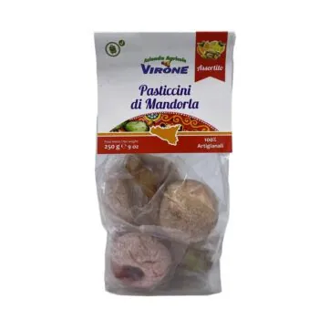
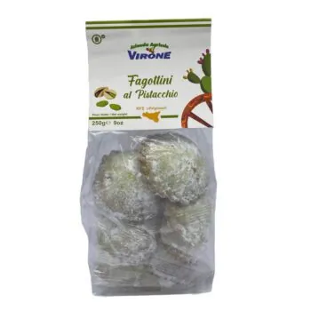
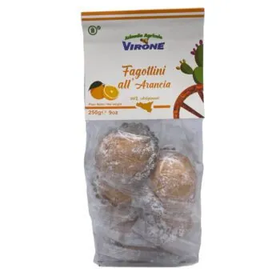
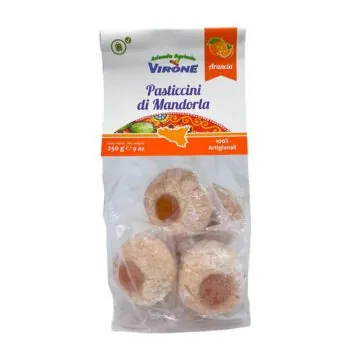
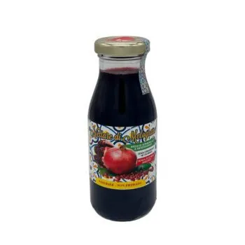

Home / Dolci e prodotti tipici siciliani
Dolci e prodotti tipici siciliani
Paste di mandorla morbide in tanti gusti, fagottini e succo di melograno: piccoli regali di Sicilia da aggiungere alla cassa di agrumi.
13 prodotti

Paste di mandorla siciliane – 500/600 g14,90 €
Paste di mandorla al pistacchio – 250 g7,50 €
Paste di mandorla al limone – 250 g7,50 €
Paste di mandorla con granella di pistacchio – 250 g7,50 €
Paste di mandorla assortite – 250 g7,50 €
Fagottini al pistacchio – 250 g7,50 €
Fagottini all'arancia – 250 g7,50 €
Paste di mandorla all'arancia – 250 g7,50 €
Succo di melograno – 200 ml4,00 €Altri prodotti del reparto sul negozio
Spedizione gratis sulle casseper tutte le casse di agrumi
24/48 oreagrumi spediti lunedì e martedì
Paghi come vuoicarta, PayPal, bonifico, Amazon Pay, contrassegno (+5 €)
Ordini anche al telefonoo su WhatsApp, lun–sab 9–18